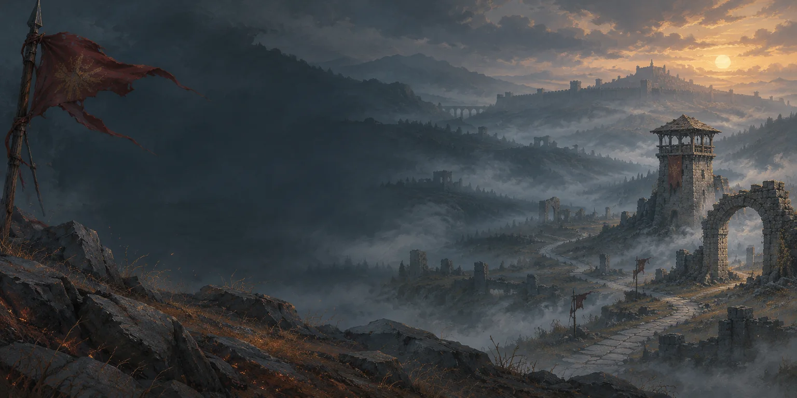
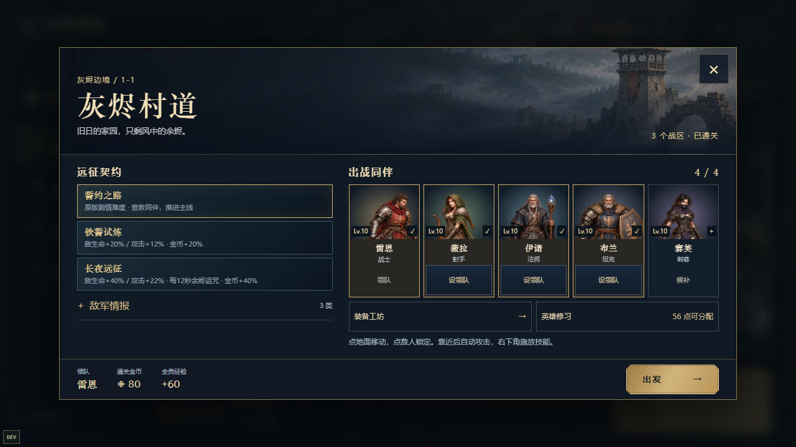
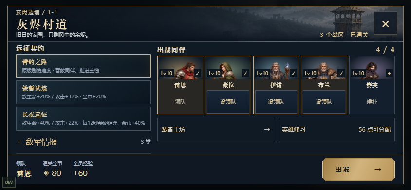
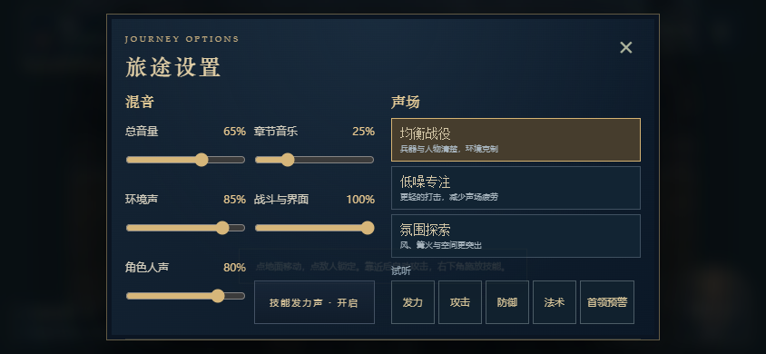

远征整备与章节原声
灰烬誓约 v0.14.0 · 2026-11-19
来源、提示词与运行说明 · v0.13 素材图鉴
灰烬边境

浏览器实测画面



原创配乐及首领音效试听
每条素材独立试听。游戏会根据战况混合前两条同拍配乐。
八十拍低弦与拨弦主题《余火行路》
oath-road.wav · 24 秒与主题同拍的低鼓和断奏战斗层
oath-pressure.wav · 24 秒原创首领预警
warden-warning.wav · 0.78 秒原创首领落地声
warden-impact.wav · 0.53 秒原创首领预警
bishop-warning.wav · 0.9 秒原创首领落地声
bishop-impact.wav · 0.62 秒